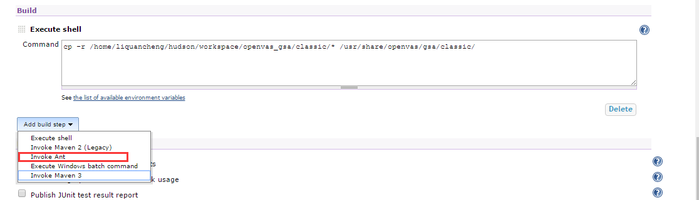
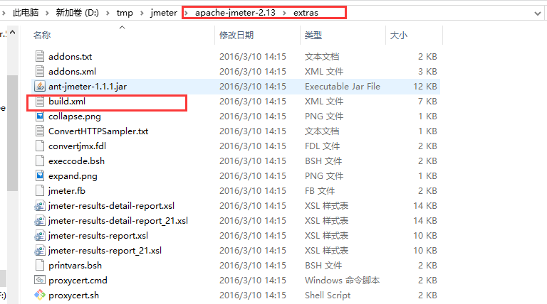
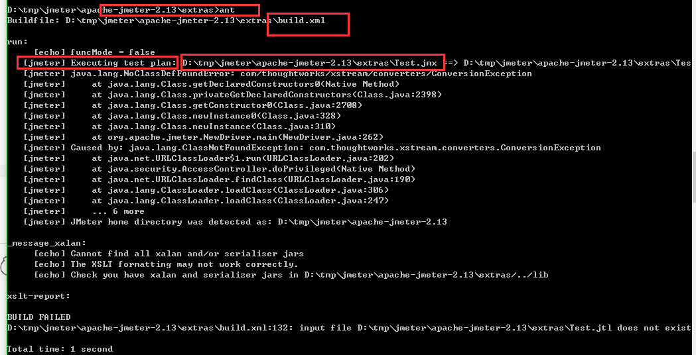
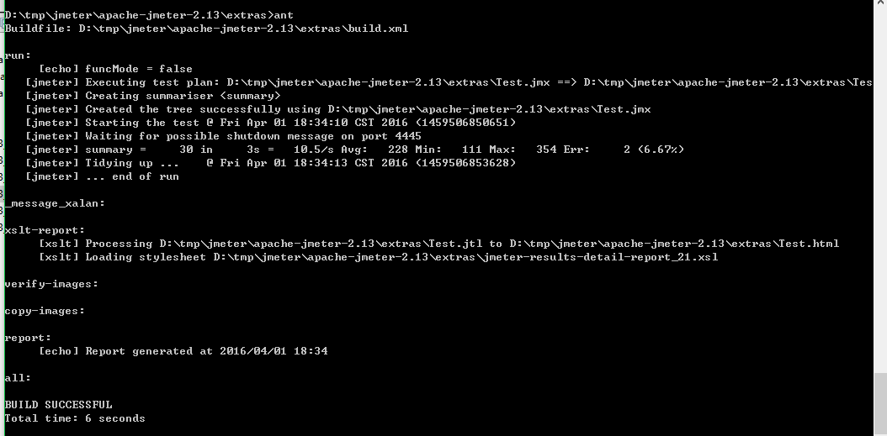
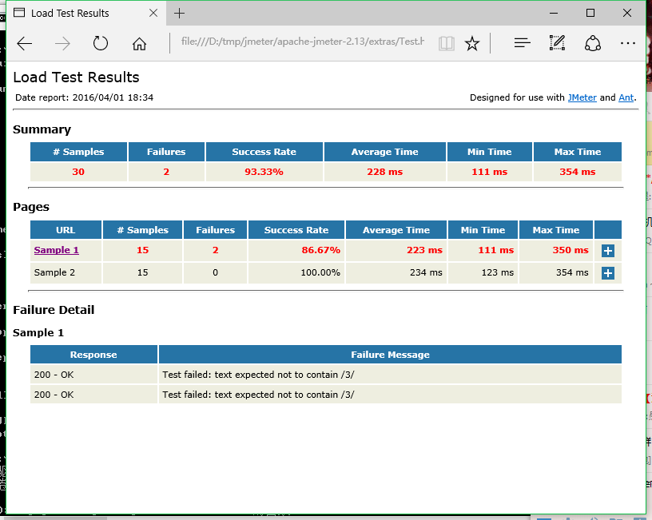
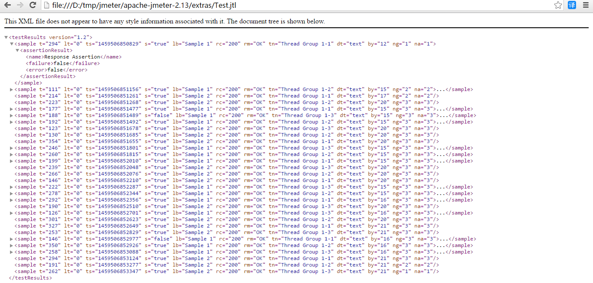
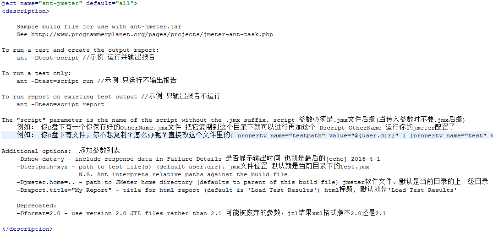

调用了java代码随便测试了一下而已。。
调用了java代码随便测试了一下而已。。要调用就要在jekins安装的机器上也安装这个2个软件，当然ant jekins会自己下载 ，但是jmeter就不会了。我们可以自己下载到jekins安装的机器里去。
都安装好了调用逻辑就比较清晰了， jekins中在build构建步骤设置里就可以添加 ant构建器

相信用过jenkins的都知道 上图是用来构建项目的 步骤设置！
那么 ant怎么调jmeter呢？ 按照ant 基本结构是 先要有依赖jar路径；这里我们需要时候再指定就好了；然后就是ant执行文件build.xml文件？
怎么写呢？其实不用着急 ，jmeter提供我们ant调用的方法老规矩看官看下图

jmeter写的这build.xml文件都能干嘛？ 这应该就是我们的重点了。只有明白了这个build文件我没就能调用了jmeter了.
先运行一把

失败了！但可以看到 一个重要的信息 指定了一个 Test.jmx 的文件。jmx文件 这个相信用过jmeter的人都知道怎么来的吧！
这个文件的位置就在extras目录下面，我们看看它写的是什么吧!
调用了java代码随便测试了一下而已。。
ok 那么接下来就是让他运行成功了！

ok 那么结果在那里呢？成功了是成功了。这是我们可以看到当前目录下有个html文件"test.html" 是刚刚生成的吗？最后修改时间一看就知道了
我们打开看看吧!

结果已经不错的显示出来了。当然有个问题他是中文的。当然你看不习惯可以自己翻译 成中文，只要修改.xsl文件就好了,查找替换 相信你能做好。

接下来就是重点了！ build.xml有什么参数？ 这里都写了点什么呢？
 这是jmeter提供参数的介绍，简单易懂 。
看看代码吧
<property name="testpath" value="${user.dir}"/> 这里是指定测试文件存放的目录，默认是运行ant的目录也就是jmeter/extras/目录
<property name="jmeter.home" value="${basedir}/.."/> 这里就是jmeter的软件目录了，默认是jmeter/extras/目录的上一级
<property name="report.title" value="Load Test Results" />这里就是标题了。
<!-- Name of test (without .jmx) -->
<property name="test" value="Test"/> 这里指定jmx文件名称，不要后缀哦！！
<!-- Should report include response data for failures? -->
<property name="show-data" value="n"/> 这里指定jmx文件名称，不要后缀哦！！<property name="format" value="2.1"/> 这里指定jtl文件版本！默认是当前jmeter使用的版本. 我是jmeter-2.13那么就是说jmeter-2.13是2.1的jtl文件版本
<condition property="style_version" value=""> 这里就判断format 如果是2.0 就设置把style_version设置为""
<equals arg1="${format}" arg2="2.0"/>
</condition><condition property="style_version" value="_21"> 这里就判断format 如果是2.1 就设置把style_version设置为"_21"
<equals arg1="${format}" arg2="2.1"/>
</condition><condition property="funcMode"> 这里就判断show-data 如果是y 就设置把funcMode设置为有这个属性true
<equals arg1="${show-data}" arg2="y"/>
</condition>
<condition property="funcMode" value="false">这里就判断show-data 如果不是y 就设置把funcMode设置为有这个属性false
<not>
<equals arg1="${show-data}" arg2="y"/>
</not>
</condition>
<!-- Allow jar to be picked up locally -->
<path id="jmeter.classpath">
<fileset dir="${basedir}">
<include name="ant-jmeter*.jar"/> 加入ant-jmeter*.jar （ant插件包）
</fileset>
</path><taskdef
name="jmeter"
classpathref="jmeter.classpath"
classname="org.programmerplanet.ant.taskdefs.jmeter.JMeterTask"/> jmeter ant插件定义 `
其实翻译代码没什么意思。后面的代码就算了吧。 最近发现一个叫“多说”的评论api。加入到我这个静态博客吧！